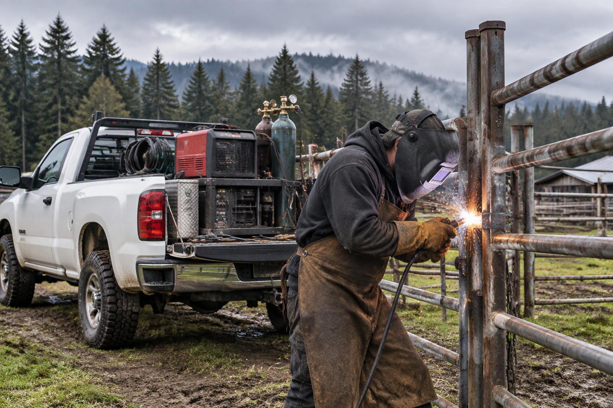
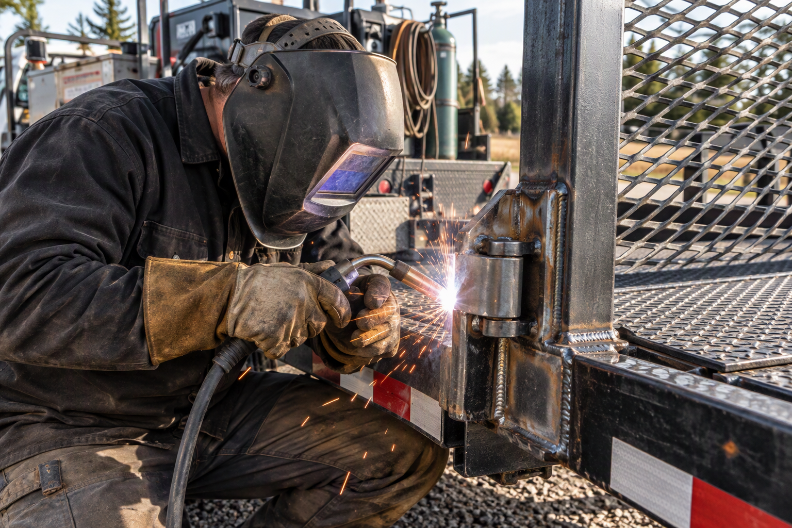
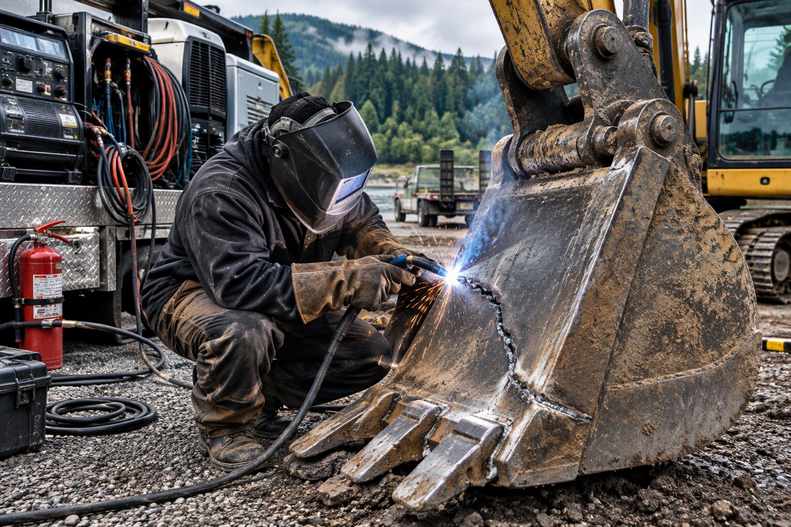
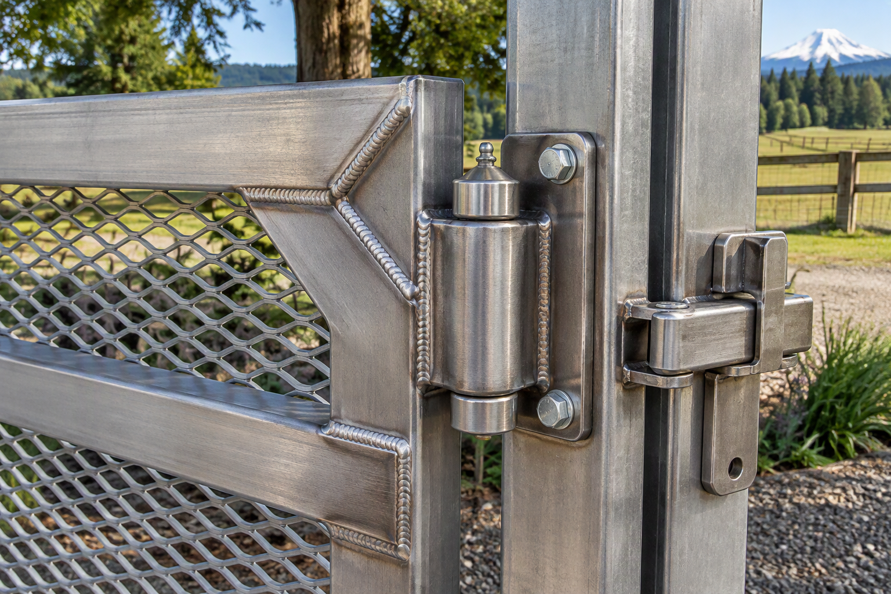

Trailer repair
Ramps, hinges, latches, fenders, jacks, brackets and accessible cracks. Structural frame, tongue and coupler work requires inspection.
Request trailer service
On-site welding • Oregon City, OR
Mobile welding for trailers, gates, farm equipment and contractor equipment. Send photos, measurements and the job location so the right time and equipment can be scheduled.
What we repair
Focused on practical repair work rather than large custom-fabrication projects.
Ramps, hinges, latches, fenders, jacks, brackets and accessible cracks. Structural frame, tongue and coupler work requires inspection.
Request trailer serviceBroken hinges, cracked frames, sagging gates, latch repairs and reinforcement for steel gates and fence components.
Request gate serviceBrackets, guards, mounts, cracked mild-steel components and field repairs where equipment cannot easily be transported.
Request farm serviceNon-engineered brackets, tabs, mounts, buckets and repairable steel components, subject to access and safety review.
Request equipment serviceSmall on-site mild-steel repairs, reinforcement, fitting, cutting, grinding and replacement of damaged steel pieces.
Describe your repairLoad-bearing, structural, lifting, pressure, vehicle-frame and other safety-critical work may require certification, engineering, inspection or referral.
Request an inspectionSimple scheduling
Tell us what is broken, where the job is and when the work is needed.
Include one wide photo, several close-ups, attachment points and a tape measure for scale.
We review access, likely scope, materials, processes and whether an inspection is needed.
You receive the next realistic appointment window, with enough time reserved to complete the work safely.
Repair examples
Replace these demonstration images with your own completed jobs as your portfolio grows.



Straightforward pricing
Every job is different, but the pricing method should be clear. Use this section after confirming your final launch rates.
Local mobile service
Initial service area focused close to Oregon City to control travel time and keep appointments reliable.
About the business
This business is being built around practical mobile repair, careful scheduling and honest job screening. Customers communicate directly with the person reviewing and performing the work.
Customer feedback
Do not publish made-up reviews. Replace these cards with genuine customer feedback after completed jobs.
Ask customers to mention communication, arrival time, repair quality and whether the final price matched expectations.
Use short, authentic feedback with permission and identify the general job type rather than private customer details.
Link verified reviews to your public business profile once the business is operating.
Common questions
Many straightforward repairs can receive a preliminary range from clear photos, measurements and the location. Larger, unusual or safety-critical jobs may require an on-site inspection.
Send a wide view of the complete item, two or more close-ups, attachment points, the backside or underside when safely accessible, and a tape measure beside the damage.
The primary focus is mobile repair. Small tabs, brackets and replacement pieces may be made as part of a repair, while larger fabrication projects may be declined or scheduled separately.
No. Access, grade, surface conditions, overhead clearance and distance from the truck affect scheduling. The job request form asks for that information before an appointment is confirmed.
No. Photos support preliminary estimating. Hidden cracking, corrosion, coatings, previous repairs, unsafe access and additional damage can change the scope. Changes should be discussed before significant additional work begins.
Engineered structural work, pressure systems, lifting components, certain vehicle or trailer-frame repairs and work requiring qualifications outside the available scope may need another contractor, engineer or inspector.
Request service
Complete the mobile checklist so the repair can be evaluated and given a realistic scheduling window.